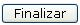

Esta opción corresponde a la evaluación que realiza cada una de las jefaturas del personal que tiene a su cargo; aquí el usuario realiza la evaluación del desempeño laboral de sus compañeros o subordinados, de acuerdo a varios aspectos a tomar en cuenta y definidos al momento de parametrizarse el sistema. La siguiente es la pantalla que contiene la lista de las personas pendientes de evaluar por parte del usuario:
Los aspectos a calificar se muestran en la lista de la siguiente pantalla, donde se tendrá evaluar cada uno de ellos, seleccionando la respuesta a cada una de las preguntas que se presenten. El tipo de evaluación a realizar depende del tipo de cuestionario que se le haya asociado al empleado desde el Módulo de Evaluación del Desempeño. Un ejemplo de un cuestionario a completar es como el siguiente:

Para seguir con la siguiente pregunta se presiona el botón SIGUIENTE y al finalizar el cuestionario se presiona el botón de GUARDAR para almacenar las respuestas de cada una de las preguntas.
Como último paso y para concluir el proceso de evaluación, se debe de regresar a la pantalla de lista, seleccionar la evaluación terminada y presionar el botón de

.